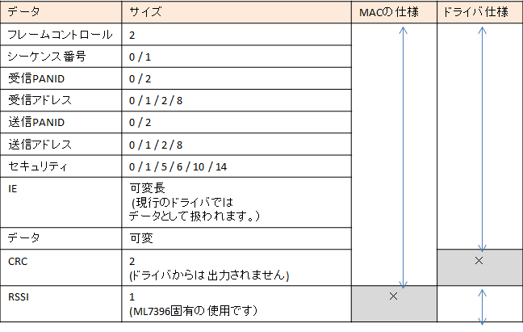
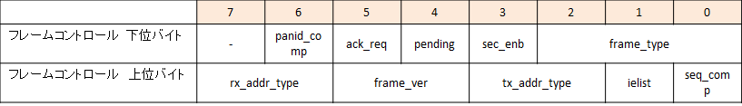

IEEE802.15.4eのデータフォーマットについて解説します。
IEEE802.15.4eのデータフォーマット、およびドライバから出力されるデータは次の通りとなっています。
フレームコントロールの中の各ビットに、フレームコントロールのversionや、
各データの有無がアサインされています。
下表はIEEE 802.15.4eで送信されるデータを表したものです。
その中で、「MACの仕様」は無線によって送信されるデータを表しています。
「ドライバ仕様」は、本ドライバソフトを使用するときにデータとして通知されるデータになっています。
CRCはドライバ内で処理され上位の関数に通知されることはありませんが
代わりに受信時の感度を示すRSSI値が最後に付与されています。

フレームコントロールのデータは16bit(2バイト)で構成されています。
そのデータの各ビットには次のような機能が割り当てられています。

2-1. frame_type
フレームタイプを示すビットです。
| 値 | フレームタイプ | 本システムでの使用可否 |
| 000 | ビーコンフレーム | 未使用 |
| 001 | データフレーム | データを送信するために使用しています。 |
| 010 | ACKフレーム | ACKを送信するために使用しています。 |
| 011 | コマンドフレーム | 未使用 |
| 100 | LLDNフレーム | 未使用 |
| 0101 | 多目的フレーム | 未使用 |
2-2. sec_enb
セキュリティーの有無を示すビットです。
| 値 | 説明 | 本システムでの使用可否 |
| 0 | セキュリティ無効 | - |
| 1 | セキュリティ有効 | 非対応 |
2-3. pending
| 値 | 説明 | 本システムでの使用可否 |
| 0 | ペンディングデータなし | - |
| 1 | ペンディングデータあり | 非対応 |
2-4. ack_req
ACK要求の有無を示すビットです。
| 値 | 説明 | 本システムでの使用可否 |
| 0 | ACK要求なし | |
| 1 | ACK要求 | アドレスタイプ = 6のときのみ有効化しています。 |
2-5. seq_comp
シーケンス番号の有無を示すビットです。シーケンス番号はデータ送信時に付与されるもので、
受信先が同じ送信元から同じシーケンス番号のデータを連続して受け取ったらデータを破棄します。
| 値 | 説明 | 本システムでの使用可否 |
| 0 | ACK要求なし | |
| 1 | ACK要求 | アドレスタイプ = 6のときのみ有効化しています。 |
2-6. ielist
ielistの有無を示しています。
| 値 | 説明 | 本システムでの使用可否 |
| 0 | ielistなし | 対応 |
| 1 | ielistあり | 非対応 |
2-7. frame_ver
フレームコントロールのデータバージョンを示しています。
| 値 | 説明 | 本システムでの使用可否 |
| 00 | IEEE 802.15.4-2003 | 非対応 |
| 01 | IEEE 802.15.4-2006 | 非対応 |
| 10 | IEEE 802.15.4e | 対応 |
2-8. アドレスについて
アドレスはpanid_comp, tx_addr_type,
rx_addr_typeにより、送信PANID、送信アドレス、受信PANID、
受信アドレスの有無、およびアドレスのモードが決まります。
rx_addr_typeについて
| 受信側 | 自機アドレス | 本システムでの使用可否 |
| 送信側 | 送信先アドレス | |
| 00 | アドレス省略 | 対応 |
| 01 | 8bitアドレス | 非対応 |
| 10 | 16bitアドレス | 対応 |
| 11 | 64bitアドレス | 非対応 |
tx_addr_typeについて
| 受信側 | 送信元アドレス | 本システムでの使用可否 |
| 送信側 | 自機アドレス | |
| 00 | アドレス省略 | 対応 |
| 01 | 8bitアドレス | 非対応 |
| 10 | 16bitアドレス | 対応 |
| 11 | 64bitアドレス | 非対応 |
PANIDの有無は、tx_addr_type, rx_addr_type, panid_compの情報に応じて次のようになっています。
| rx_addr_type | tx_addr_type | panid_comp | |||
| 受信側 | 自機アドレス | 送信元アドレス | 自機PANID | 送信元PANID | |
| 送信側 | 送信先アドレス | 自機アドレス | 送信先PANID | 自機PANID | |
| 0 | なし | なし | 0 | なし | なし |
| 1 | なし | なし | 1 | なし | あり |
| 2 | なし | あり | 0 | あり | なし |
| 3 | なし | あり | 1 | なし | なし |
| 4 | あり | なし | 0 | なし | あり |
| 5 | あり | なし | 1 | なし | なし |
| 6 | あり | あり | 0 | なし | あり |
| 7 | あり | あり | 1 | なし | なし |